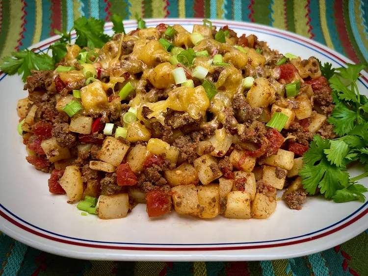

Tex-Mex Ground Beef and Potato Skillet

Description
This versatile Tex-Mex ground beef and potato skillet works as the
filling for a lettuce wrap, or as a nacho topping. It also works as
a filling for corn or flour tortillas, or as a hash-type dish, for
fried eggs. Make this even spicier with the addition of sliced
jalapeños, as many as you dare! Avocado slices and sour cream are
also nice toppings for this tasty skillet meal.
Ingredients
- 1 tablespoon olive oil
- 1 pound 93% lean ground beef
- 2 teaspoons taco seasoning mix
- 1 teaspoon chili powder
- 1 teaspoon ground cumin
- 1 teaspoon smoked paprika
- 1 teaspoon garlic granules
- 1/2 teaspoon cayenne pepper, or to taste
- 1/2 teaspoon salt, or to taste
- 1/2 teaspoon freshly ground black pepper, or to taste
- 4 cups frozen O'Brien potatoes, thawed (see Note)
-
1 (10 ounce) can diced tomatoes and green chilies (such as
RO*TEL® Tomatoes and Green Chilies)
- 2 ounces Cheddar cheese, shredded
- 2 green onions, sliced
- fresh cilantro sprigs for garnish (optional)
Steps
-
Heat oil in a 12-inch nonstick skillet over medium heat.
When oil shimmers, add ground beef. Cook and stir beef in
the hot skillet until browned and crumbly, 5 to 8 minutes.
-
Sprinkle taco seasoning, chili powder, cumin, smoked
paprika, garlic granules, cayenne, salt, and pepper over
beef, and stir to combine. Cook 1 to 2 minutes more.
-
Stir in potatoes and cook 2 to 3 minutes, then add RO*TEL
tomatoes, with juice. Cook until potatoes are tender and
most of the liquid is absorbed, 4 to 5 minutes more.